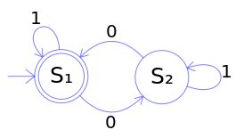

5Prerequisites for mastering M4
Readers of this series will learn how to write scripts for machine code generation. The machine-generated code can be arbitrarily complex and can contain other internal dependencies. Interdependent files with complex code are hardly sustainable for humans in a consistent state. It is necessary to use some code generation mechanism. The code generation is performed by a tool for text transformation – a macro processor.
The series focus on the practical use of the universal macro processor M4 (hereafter M4) using small examples. It also describes the theoretical part of all its implementations. The aim of the series is to acquaint the reader with this tool and also the programming language. What is it used for, how to program in it and its advantages and disadvantages.
Generating code in M4are generated by M4 scripts[1], which will make it easier (maybe) for other authors to write articles on www.root.cz. The result of the series is also a set of sample scripts for generating code.
The introductory part describes the basic principles of the language with simple examples of use. All examples use rewriting rules of context-free grammar. Later we will learn how to use output queues, automata, associative memories, stacks and pushdown automata. We will also learn how to write testing automata to test input data.
The examples are a complementary part of the series and will be based to some extent on the discussion below the article. At the beginning of each episode, some parts of the M4 language will be described and supplemented with a set of examples at the end. Each part can be read in any order.
Macro languages were invented when the assembly language (ASM) dominated. ASM source code usually contains identical instruction sequences that differ only in operand values. Identical instruction sequences can be grouped into one word or a macro instruction. The name usually describes the purpose of the hidden sequence of instructions. These macro instructions are translated by the macro processor to the original instruction sequences, which are then translated into the executable machine code. Programming in ASM using macro instructions is simpler, faster and less prone to human errors.
Later, macro languages were used to extend compiled programming languages because they made it possible to write a source code at the higher level of abstraction than offered by the programming language itself. The speed, performance and efficiency of a complex lower-level programming language is maintained through macro languages. However, it is important to understand all layers of code well.
Christopher Strachey introduced the basic idea of rewritable strings with arguments which recursively rewrite to other strings in his GPM[2] in 1965. The next generation of M3 and M4 macro processors basically just expanded the original GPM. The basic idea of the original proposal remained the same.
Dennis Ritchie took over the basic idea of GPM and wrote an improved macro processor for generating source code of C (1972) language, which he himself designed. The new macro processor was written for the minicomputer AP-3, hence the name M3. This direct ancestor of the current M4 managed to significantly save heavy and time-consuming work and attract developers programming to other languages (FORTRAN, COBOL, PL/I, …). Developers have customized M3 for these languages turning it into a universally usable M4 macro processor.
Makefile# character begins with a one-line comment like in a UNIX shell$@, $*, $#, $0, $1, $2, … have similar meanings as in a UNIX shellThe M3 macro processor was also extended by Jim E. Weythman, the author of program construction, which is used in almost every M4 script:
divert(ℤ) keyword switches output queues.
Argument -1 completely disables any text output.
Argument 0 switches output to stdout (standard output).Brian Kernighan has enhanced the M3 macro processor to the FORTRAN 66 preprocessor to create a hybrid language extension named RATFOR[3]. The basic program constructions of this extension (conditions, cycles) are the same as in C language. Programming in RATFOR is similar to C programming. The macro processor converts the source code back to FORTRAN, then the compiler performs the usual compilation to machine code.
#define, #include, #ifdef, … are comments for M4void define (char c, int i) {…}FUNC(char c, int i) macro is defined, its variables are:
$# → 2, $0 → FUNC, $1 → char c, $2 → int i` is not a part of the C family syntax' does not matter if it is not part of the macroLQ(), RQ()IN_UPPERCASE, just like nonterminal symbols
The user manual[4] mentions other co-authors not mentioned here. So it would be fairly unfair to write that the authors of the M4 macro processor (1977) are only two people.
Picture 1: Christopher Strachey[5], Dennis Ritchie[6], Brian Kernighan[7]
Today, there are several implementations that differ from the original implementation rather by small details.
The most common implementation of M4 is the GNU M4 used for Autotools
and for translating the simple sendmail.mc configuration file to complex sendmail.cf.
The author of this implementation (1990) is René Seindal.
To install m4, type the following command:
A detailed description of the keywords can be found in the documentation[8]:
~]$ pinfo m4 ~]$ man m4 ~]$ m4 --help
M4 is based on context-free grammar, automata, stacks and output queues. To understand M4, it is therefore crucial to understand the basic concepts of formal language theory – terminal symbols (briefly terminals) and nonterminal symbols (briefly nonterminals). These terms will be explained later in more detail. The objective is to show the basic practical use of M4 language on examples.
Context-free grammar (shortly CFG) is a formal grammar in which all rules for rewriting have the A → β form.
The nonterminal A is rewritten to an arbitrarily long β string composed of nonterminals N or terminals Σ.
Kleene star means that nonterminal A can be rewritten to ε (rewriting rule A → ε).
The rules for rewriting are the same for context-free grammar and M4.
All M4 keywords are nonterminals (macros), which take action and are rewritten to ε or another symbol.
All keywords can be renamed or turned off completely.
This feature is crucial for the preprocessor mode.
divert(ℤ) → ε define(`A', `β') → ε ifelse(`', `', `yes', `no') → yes ifelse(`', `', `ifdef(`dnl', `1', `0')', `no') → ifdef(`dnl', `1', `0') → 1 …
The default character pair `' in M4 controls the expansion of nonterminals.
The keyword changequote() can change them to other characters, for example {[], ␂␆, }.
The nonterminals that we do not want to (immediately) expand are surrounded by this pair of characters.
When passing through the macro processor, all the symbols between this character pair are terminal symbols and the outer character pair is removed.
The next pass will cause the expansion of the originally protected nonterminals.
The control character pair is set at the beginning of the root file.
Automata serve as switches
of grammar rules.
Automata use the grammar rules for rewriting as nodes and change their states according to input symbols.
The currently used rule produces a specific code to the output queue (or several output queues) until the automaton moves to another node with a different rule.
The examples of generating automata are in appendix.
The output queues temporarily store the portions of the resulting code.
These parts are formed using the grammar rules for rewriting which subsequently rewrite input symbols.
The divert(ℤ) keyword sets the output queue.
Finally, all non-empty queues are dumped in ascending order to the standard output and compose the final code.
The examples of the output queues are in the appendix.
M4 is used to generate the source code of any programming language or as a preprocessor for any source code.
M4 transforms input data from .mc files to output data with the following command:
Two basic operations are performed during file loading:
.m4 extension.mc filesThe input1.mc and input2.mc files contain the input data in a format that allows them to be transformed into output data according to the rules in the previous .m4 files.
The .mc data files usually do not contain any transformation rules.
The input data may also come from the pipeline:
cat input.mc | m4 root.m4 stem.m4 branch.m4 leaf.m4 - > output.file
cat input.mc | m4 root.m4 stem.m4 branch.m4 leaf.m4 - | gcc -x c -o progr -
M4 can operate in the preprocessor mode and can also be part of a pipeline. The input source code passes unchanged through except for nonterminal symbols. The nonterminals found are expanded to terminals and the output along with the source code. M4 can extend any other language where the preprocessor is insufficient (no recursion) or none. It is important to select the left character for nonterminal expansion control, which must not collide with the input source code character. However the character collision is easily solved by a regex.
m4 root.m4 stem.m4 branch.m4 leaf.m4 file.c > preproc.file.c
m4 root.m4 stem.m4 branch.m4 leaf.m4 file.c | gcc -x c -o progr -
`' Default charactersThe conflicting character ` from the input source code is hidden into a macro `'LQ().
An empty pair of control characters `' before the macro serves as a symbol separator.
When the source code is passed through the macro processor, the `'LQ() macro is rewritten back to the original ` character and the empty pair `' is removed.
sed 's/`/`'\''LQ()/g' any.src | m4 rootq.m4 leaf.m4 -
If there are # or dnl comments in the source code, they must be hidden first.
The characters `' turn off original meaning and will be removed by the macro processor.
M4 # and dnl comments are hidden between default characters: `#' `dnl'
sed 's/`/`'\''LQ()/g;s/#\|\<dnl\>/`&'\''/g' any.src | m4 rootq.m4 leaf.m4 -
sed 's/`/`'\''LQ()/g;s/#/`#'\''/g;s/\<dnl\>/`dnl'\''/g' any.src | m4 …
[] Square bracketsIf square brackets are used to control the expansion of nonterminals, the left [ square bracket is hidden in the same way.
Everything else applies as for default characters `'.
sed 's/\[/[]LB()/g' any.src | m4 rootb.m4 leaf.m4 - | …
M4 # and dnl comments are hidden between parentheses: [#] [dnl]
sed 's/\[/[]LB()/g;s/#\|\<dnl\>/[&]/g' any.src | m4 rootb.m4 leaf.m4 - | …
sed 's/\[/[]LB()/g;s/#/[#]/g;s/\<dnl\>/[dnl]/g' any.src | m4 rootb.m4 …
␂␆ Non printable charactersNon printable characters ␂ (0x02) and ␆ (0x06) can be used to control the expansion of nonterminals.
These characters cannot interfere with printable source code characters.
m4 rootn.m4 leaf.m4 any.src | gcc …
M4 # and dnl comments are hidden between non printable characters: ␂#␆ ␂dnl␆
sed 's/#\|\<dnl\>/␂&␆/g' any.src | m4 rootn.m4 leaf.m4 - | gcc …
sed 's/#/␂#␆/g;s/\<dnl\>/␂dnl␆/g' any.src | m4 rootn.m4 leaf.m4 - | gcc …
Expansion of nonterminals can also be controlled by a suitably selected UTF-8 character pair.
The usual source code does not contain such characters, so we do not have to solve the collision of the left bracket.
UTF-8 characters offer similar advantages to non printable characters.
m4 rootu.m4 leaf.m4 any.src | gcc …
M4 # and dnl comments are hidden between UTF-8 characters: # dnl
sed 's/#\|\<dnl\>/&/g' any.src | m4 rootu.m4 leaf.m4 - | gcc …
sed 's/#/#/g;s/\<dnl\>/dnl/g' any.src | m4 rootu.m4 leaf.m4 - | gcc …
The mixed mode is a combination of the previous modes and is mainly used for experiments.
The data is not separated from the rules for its transformation.
The leaf file leaf.m4 contains transformation rule definitions along with input data.
m4 root.m4 leaf.m4
Try: M4: examples
To successfully master this macro language it is important to fulfill several prerequisites.
M4 is not a simple language because it is not possible to think and program in it like an ordinary programming language.
The most important thing to realize is that it is used to program the grammar rules for rewriting.
Each string is either a terminal or a nonterminal symbol, including all language keywords (the symbols # and , are special cases of nonterminals).
for/while) because its basis is quite different from procedural or functional languages.ifelse(), ifdef() keywordsAll grammars are based on the rules for rewriting and their forms are generally described:
G = (N, Σ, P, S) N: a finite set of nonterminal symbols Σ: a finite set of terminal symbols N ∩ Σ = ø P: a finite set of production (rewrite) rules (N ∪ Σ)* N (N ∪ Σ)* → (N ∪ Σ)* S: is the start symbol S ∈ N
The Formal grammar describes the subsets of the formal language rewriting rules and one of the subsets is called context-free grammar, shortly CFG. As mentioned earlier, the CFG rewriting rules work the same as the M4 rewriting rules. Some of the following episodes of this series will focus on formal grammar in detail.
The ability to use predominantly two-state automata is an essential thing for writing simple M4 scripts because the vast majority of scripts use small automata.
The order of input symbols or their context can be tested by an automaton. If the input symbols meet the required properties, the automaton ends up in a double-ring node which indicates the accepting state.
Picture 2: Example of an automaton[9] accepting an even number (none is even) of symbols 0, ignoring symbols 1.
The automaton is the same as the regular expression (1*01*01*)*1*.
The previous automaton can be written as an ASCII art accompanying the M4 script:
# ____1 # | / # ___V__/ 0 ____ # --->// S1 \\------>/ S2 \---.1 # \\____//<------\____/<--' # 0
Input symbols change the nodes of the automaton, thereby changing the rewriting rules for code generation. See the appendix for this generating automaton:
# _______ ___________ # --->/ ERROR \--->/ NEXT_ITEM \---. # \_______/ \___________/<--'
A well-designed code generator usually consists of several smaller files whose order, dependencies and parameters are written to the Makefile file.
Good knowledge of Makefile writing is therefore a prerequisite for mastering M4.
Reading and maintaining source code generally takes more time than creating it.
A well-structured Makefile therefore significantly contributes to the overall clarity of the resulting code generator.
make[10] from the code editor with a shortcut key will significantly speed up M4 code development.
The file ~/.vimrc contains nnoremap <c-j> :make<cr>.Mastering the Vim[11] editor is an important prerequisite for the convenience and speed of writing M4 code.
Vim shortcuts, defined by the iabbrev keyword, will save large amounts of unnecessary typing.
These shortcuts also significantly reduce the occurrence of almost invisible errors caused by an unpaired bracket, thus saving the lost time spent on debugging.
M4 usually cannot be mastered over the weekend, especially when the fundamentals[12] of automata theory and formal grammars are lacking. In order to master the M4 language, it is necessary to program in a longer period of time and write amounts of bad (complex) M4 code that you rewrite for a better idea. In this way it is possible to gradually gain practice.
A.4💡 Modification of special characters
A.6[] INI: an external command
A.12[] JSON: generating automaton
A.12.2[] JSON: generated queue indexes
A.13[] INI: discontinuous queue index
A.15[] XML: separated messages
[] Input source codeThe input source code is similar to CSV, which is converted to arbitrarily complex target code of another language using CFG, automata and output queues. Stacks in the examples are not used. The input source code contains special characters that must be hidden:
# 2018/05/15 Josef Kubin ERROR([COMPLEX], [!"#$%&'()*+,-./:;<=>?@[\]^_`{|}~]) QUERY([READABLE], [Is badly written M4 code readable [N/y]?]) ERROR([SUCCESS], [Too complex M4 code failed successfully.]) WARNING([ADDICTIVE], [Programming in M4 is addictive!]) ERROR([NOFAULT], [It's not a language fault!]) WARNING([NO_ERRORS], [No other errors detected.])
2599236messages_raw.mc#, dnl, ifelse([…]) or [… somewhere inside brackets …].[] CSV: simplest exampleThis example does not use output queues, it only prints CSV separated by TAB to standard output.
# A → β
define([ERROR], [
divert(0)dnl
[$1 $2]
divert(-1)
])5ad6e1bhello.csv.m4COMPLEX !"#$%&'()*+,-./:;<=>?@[\]^_`{|}~
SUCCESS Too complex M4 code failed successfully.
NOFAULT It's not a language fault!9156810hello.csv[] CSV: counterThe example uses the COUNT_UP macro from the countb.m4 file whose β is copied to the right side of the COUNTER macro.
During the first expansion of COUNTER its initial value is initialized.
Further expansion returns the numeric terminal symbol and increases the inner auxiliary (global) symbol by one.
COUNTER is a small automaton.
# A → β define([COUNTER], defn([COUNT_UP])) # init counter COUNTER(1) # A → β define([ERROR], [ divert(0)dnl ERR_[]COUNTER [$1 $2] divert(-1) ])
5ad6e1bcounter.csv.m4ERR_1 COMPLEX !"#$%&'()*+,-./:;<=>?@[\]^_`{|}~
ERR_2 SUCCESS Too complex M4 code failed successfully.
ERR_3 NOFAULT It's not a language fault!9156810counter.csv💡 Modification of special charactersEach type of output code requires the modification of the special characters.
The M4 patsubst() keyword is inappropriate for this type of task.
First, we hide all special characters of the input file into appropriately named macros using regular expressions.
# 2018/05/15 Josef Kubin ERROR([COMPLEX], [[]EX()[]DQ()[#]$%[]AMP()[]AP()()*+,-./:;[]LT()=[]GT()?@[]LB()[]BS()[]RB()^_[]BQ(){|}~]) QUERY([READABLE], [Is badly written M4 code readable []LB()N/y[]RB()?]) ERROR([SUCCESS], [Too complex M4 code failed successfully.]) WARNING([ADDICTIVE], [Programming in M4 is addictive[]EX()]) ERROR([NOFAULT], [It[]AP()s not a language fault[]EX()]) WARNING([NO_ERRORS], [No other errors detected.])
0a4e91emessages.mcWe create several conversion files according to the target code type, LB() and RB() macros for square brackets are already defined in the root file.
[] Conversion file for XML, XSLT, HTML# A → β define([AMP], [&]) define([AP], [']) define([BQ], [`]) define([BS], [\]) define([DQ], ["]) define([EX], [!]) define([GT], [>]) define([LT], [<])
b53eafemarkup.m4[] Conversion file for C, JSON, INI: "string"# A → β define([AMP], [&]) define([AP], [']) define([BQ], [`]) define([BS], [\\]) define([DQ], [\"]) define([EX], [!]) define([GT], [>]) define([LT], [<])
b53eafecode.m4[] Conversion file for Bash: "string"# A → β define([AMP], [&]) define([AP], [']) define([BQ], [\`]) define([BS], [\\]) define([DQ], [\"]) define([EX], ["\!"]) define([GT], [>]) define([LT], [<])
b53eafedoubleq.m4[] Conversion file for Bash: 'string'# A → β define([AMP], [&]) define([AP], ['\'']) define([BQ], [`]) define([BS], [\]) define([DQ], ["]) define([EX], [!]) define([GT], [>]) define([LT], [<])
b53eafeapost.m4[] Conversion file for CSV, M4 (returns all characters)# A → β define([AMP], [&]) define([AP], [']) define([BQ], [`]) define([BS], [\]) define([DQ], ["]) define([EX], [!]) define([GT], [>]) define([LT], [<])
f175befunchanged.m4[] C: output queueThe example uses one output queue for characters }; to close the array at the end.
# A → β
define([ERROR], [
divert(0)dnl
"$2",
divert(-1)
])
divert(0)dnl
/*
* DONTE()
*/
char *error[[]] = {
divert(1)dnl
};
divert(-1)b53eafearray.c.m4/*
* DO NOT EDIT! This file is generated automatically!
*/
char *error[] = {
"!\"#$%&'()*+,-./:;<=>?@[\\]^_`{|}~",
"Too complex M4 code failed successfully.",
"It's not a language fault!",
};9156810array.c[] INI: an external commandThe example runs an external date command and places its output in square brackets.
The output of an external command are two comma-separated items.
The SARG1() macro selects the first item because the second item contains an unwanted LF (0x0a) new line character.
# A → β define([ERROR], [ divert(0)dnl [$1]="$2" divert(-1) ]) divert(0)dnl ; DONTE() SARG1(esyscmd([date '+[[hello_%Y%m%d]],'])) divert(-1)
5889f4ehello.ini.m4; DO NOT EDIT! This file is generated automatically!
[hello_20200806]
COMPLEX="!\"#$%&'()*+,-./:;<=>?@[\\]^_`{|}~"
SUCCESS="Too complex M4 code failed successfully."
NOFAULT="It's not a language fault!"299505dhello.ini[] .h: hex counterThe example uses the COUNTER macro to number the resulting CPP macros and one output queue.
The queue number 1 contains the preprocessor directive #endif to terminate the header file.
The decimal value of the counter is converted to the two-digit hex by keyword eval().
# A → β define([COUNTER], defn([COUNT_UP])) # init counter COUNTER(0) # A → β define([ERROR], [ divert(0)dnl [#define $1 0x]eval(COUNTER, 16, 2) divert(-1) ]) divert(0)dnl /* * DONTE() */ #ifndef __ERROR_H #define __ERROR_H divert(1) #endif /* __ERROR_H */ divert(-1)
b53eafemessages.h.m4/* * DO NOT EDIT! This file is generated automatically! */ #ifndef __ERROR_H #define __ERROR_H #define COMPLEX 0x00 #define SUCCESS 0x01 #define NOFAULT 0x02 #endif /* __ERROR_H */
b53eafemessages.h[] C: small automatonThe example uses a small automaton NEW_LINE to generate a newline \n character and one output queue number 1 containing "; characters to terminate resulting string.
Run the first time NEW_LINE, is rewritten to ε, in all following ones, it is rewritten to \n.
# NEW_LINE automaton # ___ ____ # --->/ ε \--->/ \n \---. # \___/ \____/<--' # A → β define([NEW_LINE], [define([$0], [\n])]) # A → β define([ERROR], [ divert(0)NEW_LINE[]$2[]dnl divert(-1) ]) divert(0)dnl /* * DONTE() */ char error[[]] = "divert(1)"; divert(-1)
b53eafestringl.c.m4/*
* DO NOT EDIT! This file is generated automatically!
*/
char error[] =
"!\"#$%&'()*+,-./:;<=>?@[\\]^_`{|}~\nToo complex M4 code failed successfully.\nIt's not a language fault!";9156810stringl.c[] C: small automaton 2This example is similar to the previous one, but each string is on a new line.
# NEW_LINE automaton
# ___ _________
# --->/ ε \--->/ \n"\xa" \---.
# \___/ \_________/<--'
# A → β
define([NEW_LINE], [define([$0], [\n"
"])])
# A → β
define([ERROR], [
divert(0)NEW_LINE[]$2[]dnl
divert(-1)
])
divert(0)dnl
/*
* DONTE()
*/
char error[[]] =
"divert(1)";
divert(-1)18148dfstring.c.m4/*
* DO NOT EDIT! This file is generated automatically!
*/
char error[] =
"!\"#$%&'()*+,-./:;<=>?@[\\]^_`{|}~\n"
"Too complex M4 code failed successfully.\n"
"It's not a language fault!";9156810string.c[] HTML: output queuesThe example uses two output queues.
The queue number 1 contains paragraphs.
The queue number 2 contains closing HTML tags.
Navigation links do not have to be stored anywhere, they go straight to the output.
The QUERY and WARNING messages are processed in the same way as the ERROR messages.
# vim:ft=m4 # A → β # β define([ERROR], [ divert(0)dnl [<li>$0: <a href="#$1">$1</a></li>] divert(1)dnl <p id="[$1]">$2</p> divert(-1) ]) # A → β define([QUERY], defn([ERROR])) define([WARNING], defn([ERROR])) divert(0)dnl <!-- DONTE() --> <!doctype html> <html lang="en"> <meta charset="utf-8"> <title>__file__</title> <body> <h1>The power of M4</h1> <ul> divert(1)dnl </ul> divert(2)dnl </body> </html> divert(-1)
b53eafemessages.html.m4<!-- DO NOT EDIT! This file is generated automatically! -->
<!doctype html>
<html lang="en">
<meta charset="utf-8">
<title>messages.html.m4</title>
<body>
<h1>The power of M4</h1>
<ul>
<li>ERROR: <a href="#COMPLEX">COMPLEX</a></li>
<li>QUERY: <a href="#READABLE">READABLE</a></li>
<li>ERROR: <a href="#SUCCESS">SUCCESS</a></li>
<li>WARNING: <a href="#ADDICTIVE">ADDICTIVE</a></li>
<li>ERROR: <a href="#NOFAULT">NOFAULT</a></li>
<li>WARNING: <a href="#NO_ERRORS">NO_ERRORS</a></li>
</ul>
<p id="COMPLEX">!"#$%&'()*+,-./:;<=>?@[\]^_`{|}~</p>
<p id="READABLE">Is badly written M4 code readable [N/y]?</p>
<p id="SUCCESS">Too complex M4 code failed successfully.</p>
<p id="ADDICTIVE">Programming in M4 is addictive!</p>
<p id="NOFAULT">It's not a language fault!</p>
<p id="NO_ERRORS">No other errors detected.</p>
</body>
</html>9156810messages.html[] Branching by grammarThe example shows branching by grammar, macro arguments are ignored.
Input nonterminals are rewritten to terminals ERROR → 🐛,
QUERY → 🐜,
WARNING → 🐝.
# A → β # β define([ERROR], [ divert(0)dnl $0_INSECT[]dnl divert(-1) ]) # A → β define([QUERY], defn([ERROR])) define([WARNING], defn([ERROR])) define([ERROR_INSECT], [🐛]) define([QUERY_INSECT], [🐜]) define([WARNING_INSECT], [🐝])
b53eafeinsect.txt.m4🐛🐜🐛🐝🐛🐝
b53eafeinsect.txtThe $0 variable is replaced by the name of the macro and concatenated with another symbol.
The newly formed nonterminal is rewritten to the corresponding terminal symbol (queue number or name).
$0_QU → ERROR_QU → 2 $0_END → ERROR_END → 3 $0_NAME → ERROR_NAME → error $0_QU → QUERY_QU → 0 $0_END → QUERY_END → 1 $0_NAME → QUERY_NAME → query …
[] JSON: generating automatonThe example uses two output queues and one generating automaton.
The first ERROR([…]) error message in the ERROR state generates a header with brackets and outputs the first record.
The automaton goes to the state NEXT_ITEM which is a β rule.
The following error messages in the NEXT_ITEM state only output individual records.
At the end the output queue number 1 and number 2 print the characters ] and }} to close the resulting JSON.
# _______ ___________
# --->/ ERROR \--->/ NEXT_ITEM \---.
# \_______/ \___________/<--'
# A → β
define([ERROR], [
# transition to the next node
define([$0], defn([NEXT_ITEM]))
divert(0),
"error": LB()
{"[$1]": "$2"}dnl
divert(1)
RB()
divert(-1)
])
# β
define([NEXT_ITEM], [
divert(0),
{"[$1]": "$2"}dnl
divert(-1)
])
divert(0)dnl
{"generating_automaton": {
"_comment": "DONTE()"dnl
divert(2)dnl
}}
divert(-1)b53eafeatm.json.m4{"generating_automaton": {
"_comment": "DO NOT EDIT! This file is generated automatically!",
"error": [
{"COMPLEX": "!\"#$%&'()*+,-./:;<=>?@[\\]^_`{|}~"},
{"SUCCESS": "Too complex M4 code failed successfully."},
{"NOFAULT": "It's not a language fault!"}
]
}}9156810atm.json[] JSON: named queuesThe example processes other types of messages QUERY and WARNING.
It uses three automata and six output queues.
If we generate more complex source code, we will soon encounter the problem of maintaining index consistency for output queues.
To avoid confusion, we use queue names instead of numbers.
To avoid having to define similar rules, we copy the right side of ERROR (it is also a β rule) to the right side of the QUERY and WARNING rules.
# DO NOT WRITE INDEXES MANUALLY, use counter!
define([QUERY_QU], 0)
define([QUERY_END], 1)
define([ERROR_QU], 2)
define([ERROR_END], 3)
define([WARNING_QU], 4)
define([WARNING_END], 5)
define([LAST_QUEUE], 6)
# names of message types
define([WARNING_NAME], [warning])
define([ERROR_NAME], [error])
define([QUERY_NAME], [query])
# _________ ___________
# --->/ ERROR \--->/ NEXT_ITEM \---.
# | QUERY | \___________/<--'
# \_WARNING_/
# A → β
# β
define([ERROR], [
# transition to the next node
define([$0], defn([NEXT_ITEM]))
divert($0_QU),
"$0_NAME": LB()
{"[$1]": "$2"}dnl
divert($0_END)
RB()dnl
divert(-1)
])
# β
define([NEXT_ITEM], [
divert($0_QU),
{"[$1]": "$2"}dnl
divert(-1)
])
# A → β
define([QUERY], defn([ERROR]))
define([WARNING], defn([ERROR]))
divert(0)dnl
{"queue_names": {
"_comment": "DONTE()"dnl
divert(LAST_QUEUE)
}}
divert(-1)b53eafeqnames.json.m4{"queue_names": {
"_comment": "DO NOT EDIT! This file is generated automatically!",
"query": [
{"READABLE": "Is badly written M4 code readable [N/y]?"}
],
"error": [
{"COMPLEX": "!\"#$%&'()*+,-./:;<=>?@[\\]^_`{|}~"},
{"SUCCESS": "Too complex M4 code failed successfully."},
{"NOFAULT": "It's not a language fault!"}
],
"warning": [
{"ADDICTIVE": "Programming in M4 is addictive!"},
{"NO_ERRORS": "No other errors detected."}
]
}}9156810qnames.json[] JSON: generated queue indexesDuring development, the order and number of output queues often change, which also requires frequent changes of their indexes. It is therefore appropriate to generate indexes. We can then use a virtually unlimited number of queues. The following example shows how these indexes are generated.
# defines a counter for output queues # A → β define([QUEUE_INDEX], defn([COUNT_UP])) # index of the first output queue (0 is stdout) QUEUE_INDEX(0) # symbolic names for indices of output queues # A → β define([QUERY_QU], QUEUE_INDEX) define([QUERY_END], QUEUE_INDEX) define([ERROR_QU], QUEUE_INDEX) define([ERROR_END], QUEUE_INDEX) define([WARNING_QU], QUEUE_INDEX) define([WARNING_END], QUEUE_INDEX) # Keep it last! define([LAST_QUEUE], QUEUE_INDEX) # names of message types # A → β define([WARNING_NAME], [warning]) define([ERROR_NAME], [error]) define([QUERY_NAME], [query])
9cfdf77queues.m4# _________ ___________
# --->/ ERROR \--->/ NEXT_ITEM \---.
# | QUERY | \___________/<--'
# \_WARNING_/
# A → β
# β
define([ERROR], [
# transition to the next node
define([$0], defn([NEXT_ITEM]))
divert($0_QU),
"$0_NAME": LB()
{"[$1]": "$2"}dnl
divert($0_END)
RB()dnl
divert(-1)
])
# β
define([NEXT_ITEM], [
divert($0_QU),
{"[$1]": "$2"}dnl
divert(-1)
])
# A → β
define([QUERY], defn([ERROR]))
define([WARNING], defn([ERROR]))
divert(0)dnl
{"messages": {
"_comment": "DONTE()"dnl
divert(LAST_QUEUE)
}}
divert(-1)b53eafemessages.json.m4{"messages": {
"_comment": "DO NOT EDIT! This file is generated automatically!",
"query": [
{"READABLE": "Is badly written M4 code readable [N/y]?"}
],
"error": [
{"COMPLEX": "!\"#$%&'()*+,-./:;<=>?@[\\]^_`{|}~"},
{"SUCCESS": "Too complex M4 code failed successfully."},
{"NOFAULT": "It's not a language fault!"}
],
"warning": [
{"ADDICTIVE": "Programming in M4 is addictive!"},
{"NO_ERRORS": "No other errors detected."}
]
}}9156810messages.json[] INI: discontinuous queue indexThe example uses three automata and two output queues number 2 and 4 defined in a separate file.
INI section names are generated by symbol chaining (see branching).
The example uses the same file for output queues as the example to generate JSON.
# _________ ___________ # --->/ ERROR \--->/ NEXT_ITEM \---. # | QUERY | \___________/<--' # \_WARNING_/ # A → β # β define([ERROR], [ divert($0_QU) BRAC($0_NAME) [$1]="$2" divert(-1) # transition to the next node define([$0], defn([NEXT_ITEM])) ]) # A → β define([QUERY], defn([ERROR])) define([WARNING], defn([ERROR])) # β define([NEXT_ITEM], [ divert($0_QU)dnl [$1]="$2" divert(-1) ]) divert(0)dnl ; DONTE() divert(-1)
c145befmessages.ini.m4; DO NOT EDIT! This file is generated automatically!
[query]
READABLE="Is badly written M4 code readable [N/y]?"
[error]
COMPLEX="!\"#$%&'()*+,-./:;<=>?@[\\]^_`{|}~"
SUCCESS="Too complex M4 code failed successfully."
NOFAULT="It's not a language fault!"
[warning]
ADDICTIVE="Programming in M4 is addictive!"
NO_ERRORS="No other errors detected."9156810messages.ini[] XML: mixed messagesThe example uses one output queue number 1 for the </messages> closing tag.
# A → β # β define([ERROR], [ divert(0)dnl <$0_NAME> <name>[$1]</name> <value>$2</value> </$0_NAME> divert(-1) ]) # A → β define([QUERY], defn([ERROR])) define([WARNING], defn([ERROR])) divert(0)dnl <!-- DONTE() --> <?xml version="1.0" encoding="utf-8"?> <messages> divert(1)dnl </messages> divert(-1)
b53eafemixed.xml.m4<!-- DO NOT EDIT! This file is generated automatically! -->
<?xml version="1.0" encoding="utf-8"?>
<messages>
<error>
<name>COMPLEX</name>
<value>!"#$%&'()*+,-./:;<=>?@[\]^_`{|}~</value>
</error>
<query>
<name>READABLE</name>
<value>Is badly written M4 code readable [N/y]?</value>
</query>
<error>
<name>SUCCESS</name>
<value>Too complex M4 code failed successfully.</value>
</error>
<warning>
<name>ADDICTIVE</name>
<value>Programming in M4 is addictive!</value>
</warning>
<error>
<name>NOFAULT</name>
<value>It's not a language fault!</value>
</error>
<warning>
<name>NO_ERRORS</name>
<value>No other errors detected.</value>
</warning>
</messages>9156810mixed.xml[] XML: separated messagesThe example groups messages by their type using output queues.
# A → β # β define([ERROR], [ # transition to the next node define([$0], defn([NEXT_ITEM])) divert($0_QU)dnl <$0_NAME> <item> <name>[$1]</name> <value>$2</value> </item> divert($0_END)dnl </$0_NAME> divert(-1) ]) # β define([NEXT_ITEM], [ divert($0_QU)dnl <item> <name>[$1]</name> <value>$2</value> </item> divert(-1) ]) # A → β define([QUERY], defn([ERROR])) define([WARNING], defn([ERROR])) divert(0)dnl <!-- DONTE() --> <?xml version="1.0" encoding="utf-8"?> <messages> divert(LAST_QUEUE)dnl </messages> divert(-1)
b53eafemessages.xml.m4<!-- DO NOT EDIT! This file is generated automatically! -->
<?xml version="1.0" encoding="utf-8"?>
<messages>
<query>
<item>
<name>READABLE</name>
<value>Is badly written M4 code readable [N/y]?</value>
</item>
</query>
<error>
<item>
<name>COMPLEX</name>
<value>!"#$%&'()*+,-./:;<=>?@[\]^_`{|}~</value>
</item>
<item>
<name>SUCCESS</name>
<value>Too complex M4 code failed successfully.</value>
</item>
<item>
<name>NOFAULT</name>
<value>It's not a language fault!</value>
</item>
</error>
<warning>
<item>
<name>ADDICTIVE</name>
<value>Programming in M4 is addictive!</value>
</item>
<item>
<name>NO_ERRORS</name>
<value>No other errors detected.</value>
</item>
</warning>
</messages>9156810messages.xml[] Bash ~]$ echo "string"# A → β # β define([ERROR], [ divert(0)dnl echo "$2" divert(-1) ]) # A → β define([QUERY], defn([ERROR])) define([WARNING], defn([ERROR])) divert(0)dnl #!/bin/bash # [#] DONTE() divert(-1)
b53eafedoubleq.sh.m4#!/bin/bash
#
# DO NOT EDIT! This file is generated automatically!
echo ""\!"\"#$%&'()*+,-./:;<=>?@[\\]^_\`{|}~"
echo "Is badly written M4 code readable [N/y]?"
echo "Too complex M4 code failed successfully."
echo "Programming in M4 is addictive"\!""
echo "It's not a language fault"\!""
echo "No other errors detected."9156810doubleq.sh[] Bash ~]$ echo 'string'# A → β # β define([ERROR], [ divert(0)dnl echo '$2' divert(-1) ]) # A → β define([QUERY], defn([ERROR])) define([WARNING], defn([ERROR])) divert(0)dnl #!/bin/bash # [#] DONTE() divert(-1)
b53eafeapost.sh.m4#!/bin/bash
#
# DO NOT EDIT! This file is generated automatically!
echo '!"#$%&'\''()*+,-./:;<=>?@[\]^_`{|}~'
echo 'Is badly written M4 code readable [N/y]?'
echo 'Too complex M4 code failed successfully.'
echo 'Programming in M4 is addictive!'
echo 'It'\''s not a language fault!'
echo 'No other errors detected.'9156810apost.shB.2`' CSS: file inclusion, comment
B.3␂␆ Bash: nonprintable characters
`' C preprocessor and M4The CPP directives are a one-line comment for M4 preventing unwanted expansion of the same named macros.
If we define a safer SAF() macro, the similar SAF () macro will not be overwritten.
Thus, the CPP namespace can be completely separated from the M4 namespace.
The problematic (backquote) character ` is hidden in the LQ() macro.
The apostrophe ' does not matter in the source code.
Apostrophe inside ORD macro is hidden in ()RQ() macro.
Note the define () or ifelse () function names and where the SYMBOL is expanded.
# ORDinary and SAFe macros have different expansion: # A → β define(`ORD', `$0_M4 RQ()SYMBOL`'RQ()') define(`SAF', `ifelse(`$#', `0', ``$0'', `($1) * ($1) /* $0_M4 SYMBOL */')') divert(0)dnl
b53eafefile.c.m4/* * DONTE() */ #include <stdio.h> /* CPP SYMBOL */ #define SYMBOL /* CPP SYMBOL */ #define SAF(x) ((x) * ((x) - 1)) /* CPP SYMBOL */ #define ORD(x) CPP SYMBOL x int a = SAF (1 + 1); /* CPP */ int b = SAF(2 + 2); /* M4 */ char chr = 'x'; char foo[] = "Let's say: 'SYMBOL'"; char bar[] = "ORD (args, are, ignored)"; static void define (char *s) { puts(s);} static void ifelse (char *s) { puts(s);} int main(void) { #ifdef SYMBOL /* SYMBOL */ puts("LQ()SYMBOL'"); /* note: `LQ()SYMBOL' */ #endif define (foo); /* SYMBOL */ ifelse (bar); /* SYMBOL() */ return 0; }
b53eafefile.cm4 -DSYMBOL='Hello, world!' root0q.m4 file.c.m4 file.c > preproc.file.c
/* * DO NOT EDIT! This file is generated automatically! */ #include <stdio.h> /* CPP SYMBOL */ #define SYMBOL /* CPP SYMBOL */ #define SAF(x) ((x) * ((x) - 1)) /* CPP SYMBOL */ #define ORD(x) CPP SYMBOL x int a = SAF (1 + 1); /* CPP */ int b = (2 + 2) * (2 + 2) /* SAF_M4 Hello, world! */; /* M4 */ char chr = 'x'; char foo[] = "Let's say: 'Hello, world!'"; char bar[] = "ORD_M4 'Hello, world!' (args, are, ignored)"; static void define (char *s) { puts(s);} static void ifelse (char *s) { puts(s);} int main(void) { #ifdef SYMBOL /* SYMBOL */ puts("`Hello, world!'"); /* note: LQ()SYMBOL */ #endif define (foo); /* Hello, world! */ ifelse (bar); /* Hello, world! */ return 0; }
b53eafepreproc.file.c`' CSS: file inclusion, commentCSS uses the # character for color codes, which is also the beginning of a one-line M4 comment.
The changecom(/*,*/) keyword sets a multiline /* … */ comment and rewrites itself into ε.
The comments can be turned off with the same changecom keyword without parameters.
.foo {
border: WIDTH 2px 1px;
}9e13656foo.css# CSS preprocessor define(`WIDTH', `3px') define(`TOP', `#f00') define(`SIDES', `#0f0') define(`BOTTOM', `#00f') define(`SITE', `www.root.cz') define(`IMAGE', `m4tux.png') define(`PATH', `https://SITE/IMAGE') divert(0)dnl
9e13656file.css.m4/* DONTE() */changecom(/*,*/) /* DONTE() */ include(`foo.css')dnl .bar { border-width: WIDTH; border-color: TOP SIDES BOTTOM; background-image: url('PATH'); } /* DONTE() */ changecom/* DONTE() */changecom(/*,*/)
3ed8f6afile.cssm4 -DSYMBOL='Hello, world!' root0q.m4 file.css.m4 file.css > preproc.file.css
/* DO NOT EDIT! This file is generated automatically! */ /* DONTE() */ .foo { border: 3px 2px 1px; } .bar { border-width: 3px; border-color: #f00 #0f0 #00f; background-image: url('https://www.root.cz/m4tux.png'); } /* DONTE() */ /* DO NOT EDIT! This file is generated automatically! */
41542d1preproc.file.css␂␆ Bash: nonprintable charactersBash uses both ` and [ characters.
If we do not want to hide them either in an LQ() or LB() macro, we can use nonprintable characters for expansion control, see the example:
# vim:mps+=␂\:␆ # A → β define(␂LEFT␆, ␂$␂#␆␆) define(␂OP␆, ␂-eq␆) define(␂RIGHT␆, ␂0␆) divert(0)dnl
b53eafefile.sh.m4#!/bin/bash # ␂#␆ DONTE() HELLO=`echo 'SYMBOL'` if [[ LEFT OP RIGHT ]] then echo $HELLO fi
b53eafefile.shm4 -DSYMBOL='Hello, world!' root0n.m4 file.sh.m4 file.sh > preproc.file.sh
#!/bin/bash # # DO NOT EDIT! This file is generated automatically! HELLO=`echo 'Hello, world!'` if [[ $# -eq 0 ]] then echo $HELLO fi
b53eafepreproc.file.shC.3[] .h: brackets [], [,], [#], [dnl]
C.4[] AWK: examples of safer macros
[] JSON: left bracket [The [… nonterminals are not expanded …] inside square brackets.
Therefore, the left square bracket [ is replaced by the LB() macro defined in the root file.
# JSON
divert(0)dnl
{"foo": {
"_comment": "DONTE()",
"bar": LB()
{"baz": "SYMBOL"}
]
}}b53eafejson.m4m4 -DSYMBOL='Hello, world!' root0b.m4 json.m4 > hello_world.json
{"foo": {
"_comment": "DO NOT EDIT! This file is generated automatically!",
"bar": [
{"baz": "Hello, world!"}
]
}}b53eafehello_world.json[] Bash: countersThe COUNT_UP and COUNT_DOWN counters are defined in the file countb.m4.
The nonterminals [… inside brackets …] will not be expanded, only the outer brackets will be removed.
The LB() macro defined in the root file must be used.
# A → β define([LEFT], [$[#]]) define([OP], [-eq]) define([RIGHT], [0]) # define two counters # A → β define([__COUNTUP__], defn([COUNT_UP])) define([__COUNTDN__], defn([COUNT_DOWN])) # init counters __COUNTUP__(10) __COUNTDN__(10) divert(0)dnl #!/bin/bash # [#] DONTE() if [ LEFT OP RIGHT ] then echo '__COUNTUP__] SYMBOL LB()__COUNTDN__' fi if test LEFT OP RIGHT then echo '__COUNTUP__] SYMBOL LB()__COUNTDN__' fi if LB()LB() LEFT OP RIGHT ]] then echo '__COUNTUP__] SYMBOL LB()__COUNTDN__' fi
b53eafesh.m4m4 -DSYMBOL='Hello, world!' root0b.m4 countb.m4 sh.m4 > hello_world.sh
#!/bin/bash # # DO NOT EDIT! This file is generated automatically! if LEFT OP RIGHT then echo '10] Hello, world! [10' fi if test $# -eq 0 then echo '11] Hello, world! [9' fi if [[ $# -eq 0 ]] then echo '12] Hello, world! [8' fi
b53eafehello_world.sh[] .h: brackets [], [,], [#], [dnl]The empty pair [] (or the empty symbol in brackets [ε]) serves as a symbol separator.
Brackets around the comment character [#] turn off its original meaning as well as the meaning of the more powerful M4 comment
[dnl].
They also turn off the original meaning of the comma [,] as a macro argument delimiter.
These symbols become ordinary terminal symbols without any side effect.
# A → β define([HELLO], [HELLO_WORLD]) divert(0)dnl /* * [dnl] DONTE() */ [#]ifndef __[]HELLO[]_H [#]define __[]HELLO[]_H [#]define HELLO SYMBOL [#]endif /* __[]HELLO[]_H */
ce5cd99h.m4m4 -DSYMBOL='Hello, world!' root0b.m4 h.m4 > hello_world.h
/* * dnl DO NOT EDIT! This file is generated automatically! */ #ifndef __HELLO_WORLD_H #define __HELLO_WORLD_H #define HELLO_WORLD Hello, world! #endif /* __HELLO_WORLD_H */
6b10c6chello_world.h[] AWK: examples of safer macrosThe universal alert DONTE is ignored without parentheses, such as for example LB or RB.
Such macros are explicitly created by a script developer, see the root file root1b.m4.
# AWK
divert(0)dnl
#!/bin/awk -f
#
[# DONTE()] ---> "DONTE()"
BEGIN { print "DONTE[]() LB () LB() SYMBOL ]" }3a8a5ddawk.m4m4 -DSYMBOL='Hello, world!' root1b.m4 awk.m4 > hello_world.awk
#!/bin/awk -f
#
# DONTE() ---> "DO NOT EDIT! This file is generated automatically!"
BEGIN { print "DONTE() LB () [ Hello, world! ]" }3a8a5ddhello_world.awkD.1👍 Why to generate code in M4
👍 Why to generate code in M4👎 Why to avoid M4